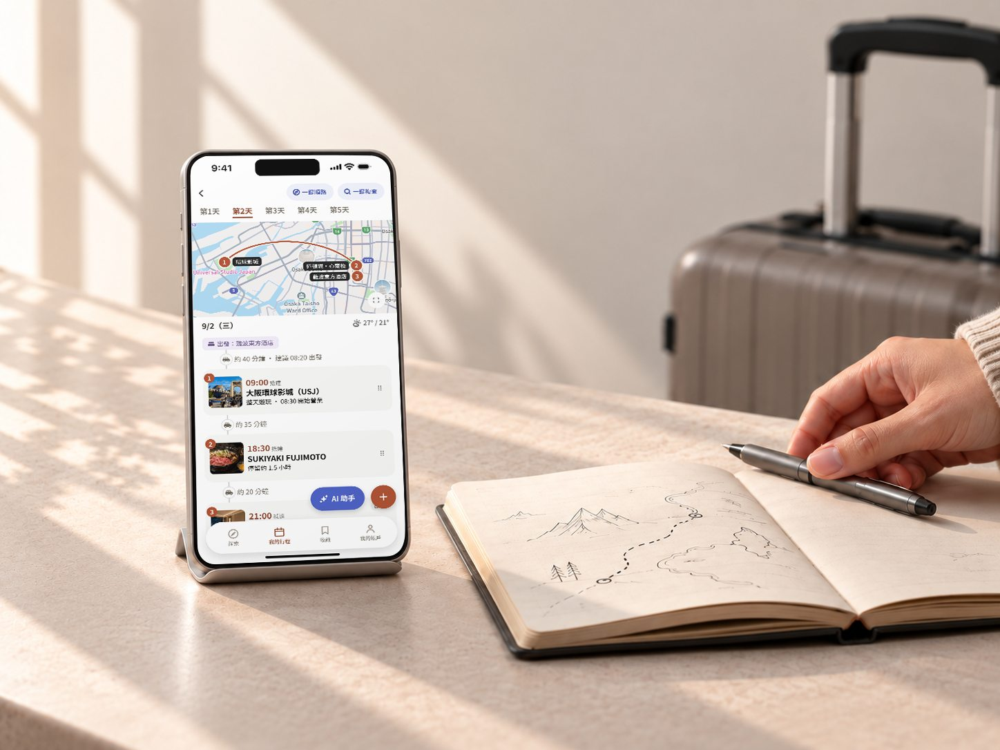
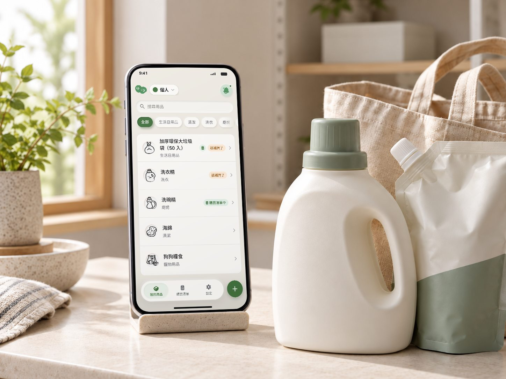

作品集 / 2026
Designing for clarity & purpose.
嗨，我是 Mia，一位 UI/UX 設計師。我從使用者研究出發，把需求整理成規格與設計決策，再用測試驗證。
從商業營運走向使用者體驗設計，帶著好奇心與不同的工作視角，持續探索更好的數位體驗。
01 / 關於
From understanding business needs to designing better experiences.
我曾在美妝貿易產業從事採購工作，累積需求分析、跨部門合作與流程管理經驗。現在將這些經驗結合使用者研究與介面設計，探索能真正解決問題的數位產品。
商業營運 → UI/UX 設計
02 / 精選作品
Selected work.
